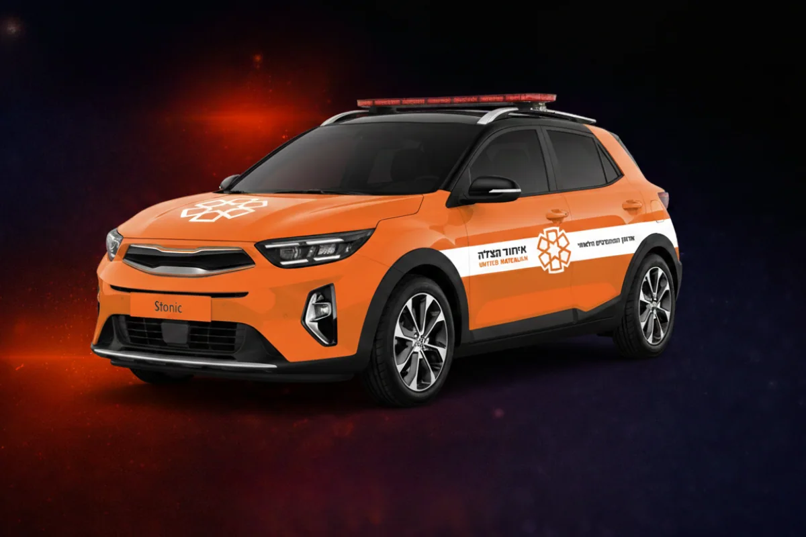

Agir vite
La vitesse d’intervention est au cœur du modèle. Chaque minute gagnée augmente les chances de stabilisation et de survie.
United Hatzalah repose sur une idée forte : apporter les premiers soins le plus vite possible, grâce à un réseau de bénévoles formés, équipés et prêts à intervenir immédiatement. Notre mission est de permettre à cette chaîne de secours unique de continuer à sauver des vies chaque jour en Israël.
United Hatzalah agit avec un objectif clair : être présent au plus vite auprès des victimes, apporter une réponse immédiate et permettre une prise en charge plus rapide, plus efficace et plus humaine dans les premières minutes d’une urgence.
La vitesse d’intervention est au cœur du modèle. Chaque minute gagnée augmente les chances de stabilisation et de survie.
Les équipes disposent d’une formation, d’un matériel et d’une organisation conçus pour apporter une réponse concrète dès les premières minutes.
Grâce à une présence terrain forte, United Hatzalah peut intervenir dans un grand nombre de situations et de zones avec une capacité unique de réactivité.
United Hatzalah ne se limite pas à une logique de transport ou d’assistance classique. Sa vision repose sur une présence humaine, médicale et logistique capable d’arriver en quelques instants, au plus près de la victime, avant même que les secours lourds ne soient sur place.

United Hatzalah s’appuie sur une direction internationale et israélienne engagée, qui porte la vision, le développement et la capacité opérationnelle de l’organisation sur le long terme.
Fondateur et Président de United Hatzalah
Il incarne la vision fondatrice de l’organisation : rendre possible une réponse médicale immédiate, accessible et capable de sauver des vies en quelques minutes seulement.
CEO International
Il accompagne le développement international de l’organisation, le rayonnement de sa mission et la structuration de son soutien à l’échelle mondiale.
CEO Israel
Il pilote l’organisation en Israël, avec un rôle central dans le déploiement opérationnel, la gestion des équipes et l’efficacité de la réponse terrain.
La branche française de United Hatzalah porte le développement, la visibilité, la relation donateurs et le soutien aux projets qui permettent à l’organisation d’agir concrètement sur le terrain en Israël.
CEO – Branche France
Il pilote le développement de la branche française, sa stratégie de croissance, ses relations institutionnelles et la mobilisation de ses soutiens.
Présidente de United Hatzalah France
Entrepreneure engagée, elle a développé une carrière dans la finance et l'immobilier avant de fonder un studio international d'architecture d'intérieur. Elle met aujourd'hui son expérience et son réseau au service du rayonnement et du soutien à la mission de United Hatzalah France.
Directrice adjointe France
Elle accompagne la structuration et le fonctionnement de la branche française, en soutien aux actions de développement et d’organisation.
Directrice adjointe France
Elle contribue à la coordination des projets, à la dynamique de l’équipe et au déploiement des actions menées en France.
Chargée de relation donateur
Elle accompagne les donateurs, répond à leurs demandes et veille à la qualité de la relation avec les soutiens de United Hatzalah France.
Chargé de projet
Il contribue au développement des projets, à leur structuration et à la mise en œuvre d’actions permettant de renforcer la mission et sa visibilité.
Derrière chaque intervention réussie, il y a des bénévoles formés, des moyens déployés, du matériel préparé, une organisation opérationnelle et une volonté constante d’être prêt, à toute heure, pour répondre immédiatement.
United Hatzalah France a pour rôle de sensibiliser, mobiliser et collecter les ressources nécessaires pour permettre à cette organisation de secours de continuer à intervenir rapidement, efficacement et massivement sur le terrain en Israël.
En soutenant United Hatzalah France, vous permettez à une organisation de terrain de continuer à agir vite, efficacement et sans attendre lorsque l’urgence frappe.